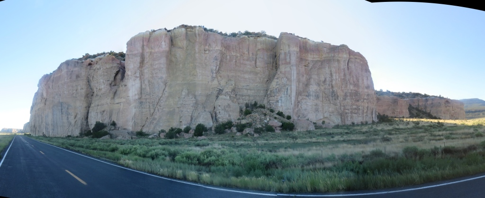
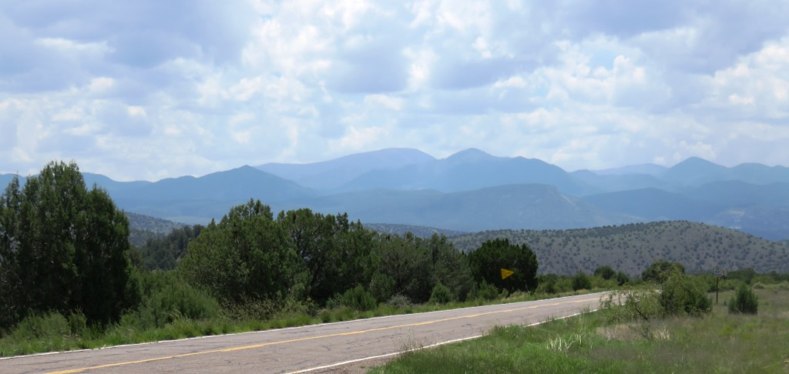

Final week - July 8 to July 14, 2015
Day 29 - A tough call to avoid thunderstorms
Riding in the rain
7:03am, 67.4 miles, 1,887ft of climbing


Day 33 - El Malpais National Monument
Morning riding and snakes on the bed
06:06 AM, 85.6mi, 2,083ft

Day 34 - The Afternoon Wind Switch
Apache Creek, Reserve and an extra 30 miles
05:42 AM, 90.3mi, 3,360ft
